01
Build the reference
Collect normal patches.
TWO INSPECTION PIPELINES
A baseline for single photos and a change-aware experiment on production streams.
Explore the pipelines ↓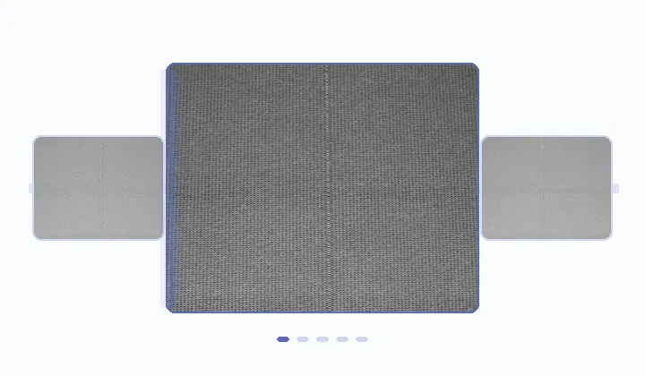
01 / WORKING MVP
Labeled photos of cracks in the plastic embedding of electrical commutators.
Collect normal patches.
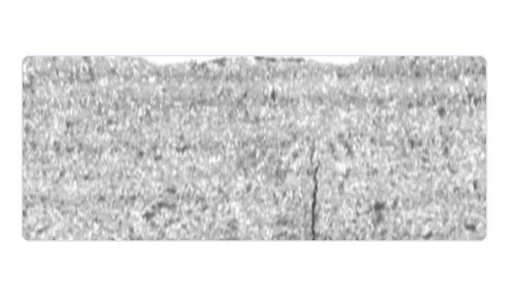
Align size and brightness.
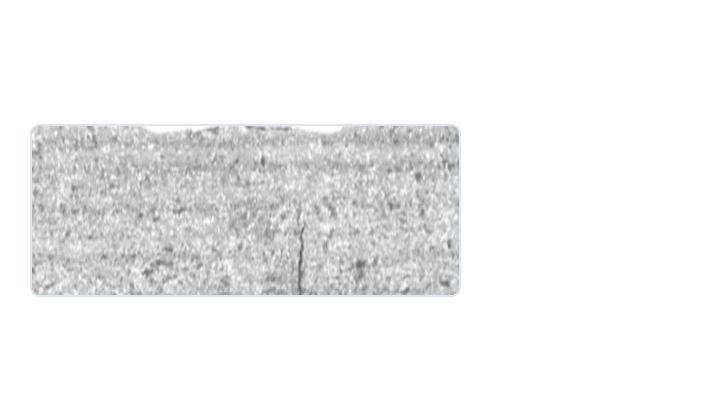
Inspect the surface area by area.
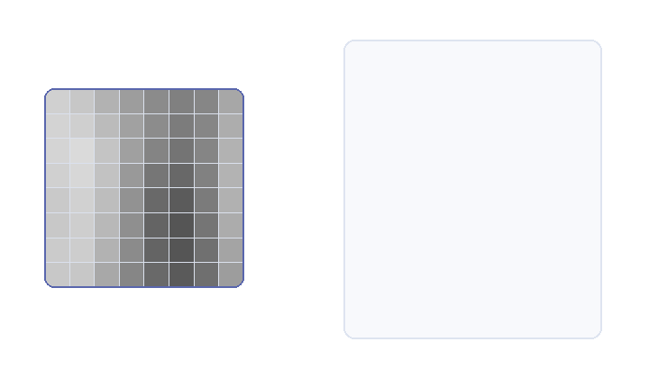
Capture local texture and edges.
Find the closest normal match.

Highlight regions for review.
HELD-OUT TEST
64 photos · custom item-group split
FIELD FEEDBACK
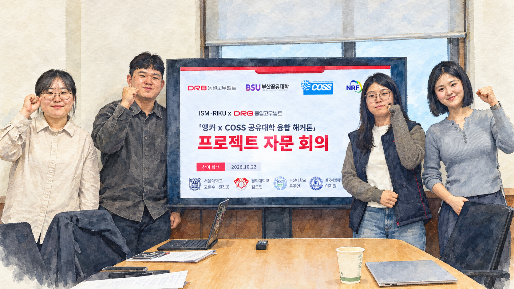
Defects are scarce, and inspection judgments can differ.
Select startup reference frames without defect labels.
Production changes may be documented without being shared with the AI team.
Flag shifts in image appearance separately from defect scores.
Both affect whether an updated reference can be used.
Measure both before considering an update.
Managers need a useful summary rather than a message for every frame.
Summarize each recorded interval and review startup frames after a change alert.
02 / RESEARCH PIPELINE
93,196 time-ordered knitting-line frames across 22 production scenarios.
FEEDBACK → TEST SETUP
Same fabric texture. Separate runs with different lighting.
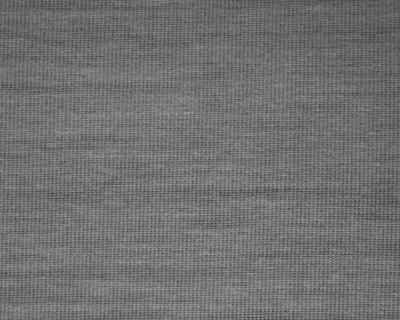
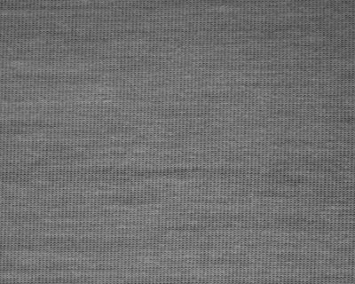
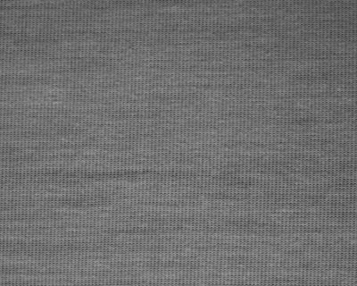

THE BOUNDARY Separate recordings; the first sustained change alert comes after 192 test frames.
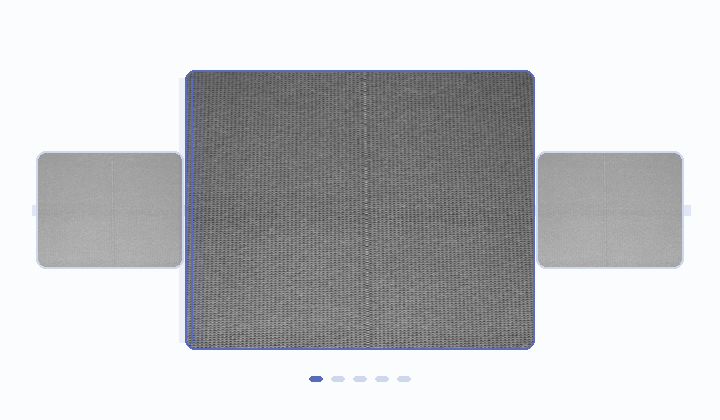
Read consecutive production frames.
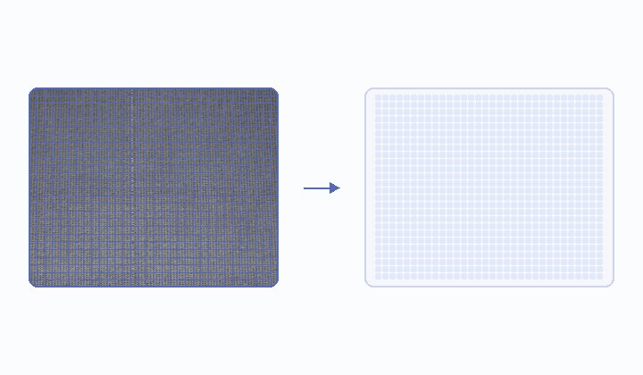
A frozen DINOv2 model maps image patches.
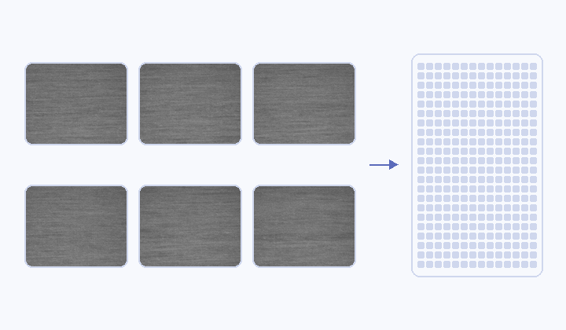
Keep typical frames in each appearance group.
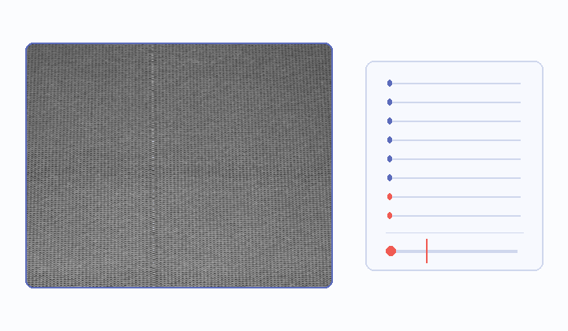
Compare patches and flag high scores.
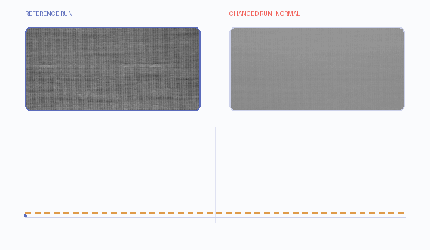
Signal when image features change.
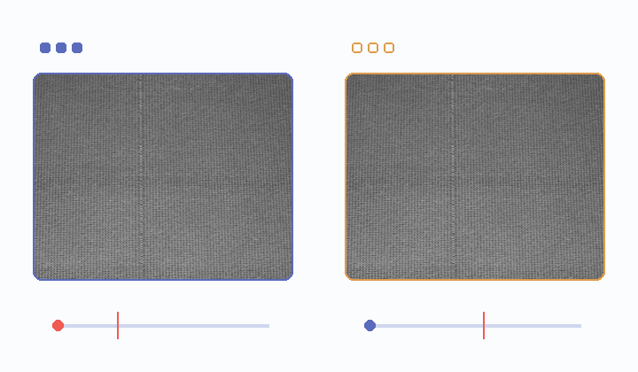
Select new-run frames; compare before updating.
ONE TEXTURE · THREE HELD-OUT RUNS
Eight patch features


All startup frames
Selected startup frames

Selected new-run frames + threshold
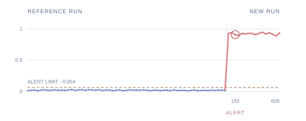
Three consecutive windows crossed the limit. The reference run stayed below it.
Fixed reference → candidate · same later test frames
138 defect · 3,834 normal frames
975 normal frames
82 defect · 2,290 normal frames
The candidate selected 308/512 early frames and recalibrated its threshold, regardless of alert timing. Recall fell on both defect runs; the candidate was not adopted.
PAIRED FRAMES
| Test run | Handcrafted | DINOv2 · all | DINOv2 · selected |
|---|---|---|---|
| Related run | 5 · 70.3% | 28 · 10.1% | 7 · 54.3% |
| Changed, normal | 975 · — | 971 · — | 11 · — |
| Larger shift | 14 · 42.7% | 2,060 · 100% | 0 · 40.2% |
These methods share held-out frames and separate source-run calibration; the two DINOv2 banks have equal capacity. Handcrafted leads on the related run, while selected DINOv2 cuts false alarms on larger shifts. Experiment record ↗